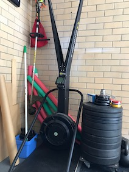

Schwinn AirDyne6

Concept2 SkiErg

Concept2 Rower
I completed the first year of The Gains Lab Year of the Engine capacity program by Matt Wiebke. My results show 11% performance improvement in the 10:00.0 air bike time trial, and maintained my pace within 5% of competition pace on 500m and 2k rowing ergometer time trials. Metabolic conditioning performance remained largely unchanged without any specific training. I recommend the program if you wish to improve your cardiovascular capacity.
Whilst going through the Year of the Engine program, I would occasionally reflect on my results to determine how I was progressing. I realised I had accumulated a significant amount of data which is collated into this review. My hope is to give people who are interested in the program concrete information in the way of results, as well as subjective information in the way of review and opinion.
A box like this describes a decision, experience or an observation that I made while on the program.
I have worked with The Gains Lab previously, having completed five months of the Total Domination program about 9 months prior to starting Year of the Engine. I have also done some behind-the-scenes work on The Gains Lab website, in exchange for a reduced rate on this program.
Prior to publishing, this review was sent to Matt Wiebke from The Gains Lab seeking:
A box like this is a comment from Matt.
For purposes of discussion, only a few workouts that comprise the program are described in detail in this review. All other workout descriptions are obfuscated to protect the content of the program. This obfuscation is described in more detail below.
The results and graphs presented in this review come directly from data collected throughout the program. The raw data is available here.
A broad overview of the program is provided below. More detail is available on The Gains Lab Engine page. Matt also gives a good summary on this /r/crossfit thread.
The program has four phases. Each phase builds on the work from the previous phase, necessitating completing each one before starting the next.
| Phase | Focus | Months | Workout types |
|---|---|---|---|
| Engine Builder | Imbalance correction | 1, 2, 3 | Intervals, Endurance, Time trials |
| Polarisation | Improve oxidative capacity | 4, 5, 6 | Intervals, Endurance |
| Differentiation | Increase speed and power | 7, 8, 9 | Intervals, Endurance, Polarisation, Time trials |
| FLUX | Zero-rest intervals | 10, 11, 12 | Intervals, Endurance, Polarisation, FLUX |
The Polarisation and Differentiation phases (months 4 to 9) are split in two tracks that you can choose from:
It is possible to mix and match between tracks, and change tracks between phases.
Workouts were received via email each month as a single .pdf file. Each file contains four weeks of workouts, each week having five workouts to complete.
An exception to this format is the first month of the program, in which the fifth workout in each week is optional.
Each workout type is described below. As mentioned above, only a select number of workouts are described in full in this document; all other workout descriptions are obfuscated according to the rules below.
| Workout Type | Description | Example workout | Obfuscation | Described here as |
|---|---|---|---|---|
| Interval | Alternating rounds of work time or distance, and rest time. Broken up into speed/threshold, anaerobic and max aerobic power sub-types. | 4x500m/1:00r | Cumulative work time and rest time. | 2k/3:00r |
| Endurance | Total duration of work time at consistent pace. | 52:00 consistent pace | No change. | 52:00 |
| MetCon | Exercises to be done for time, or for rounds and repetitions. | For time
|
Not used in this review. | Not used in this review. |
| Time trials | Total duration of work time at or beyond a competition pace. | 10:00.0 Time Trial | No change. | 10:00.0 TT |
| Polarisation | Total duration of work time, with repeated intervals of maximum effort for short durations. | 24:00 at endurance pace with max effort for 0:07 at minutes 5, 10, 15 and 20 | Total work time. | 24:00 |
| FLUX | Alternating rounds of work at endurance pace and above endurance pace. | 12 rounds of:
|
Total work time. | 36:00 |
Sample workouts and FAQ.
Year of the Engine uses ergometers. The program as supplied gives options for:
Each workout can use a different piece of equipment, allowing changing apparatus to suit your particular circumstances. Scalings are supplied for different apparatus, and the program strongly suggests which machines are not suitable for certain workouts.
The program provides no instruction on how to use any particular apparatus.
The program can be run as standalone or in addition to other training. Integration with other training is left to the athlete to manage.
As previously noted, there are two tracks you can choose during the Polarisation and Differentiation phases: pure capacity or metabolic conditioning.
I chose pure capacity. All references to workouts in this review will only be for this track, and not for the MetCon track.
The program places no restriction on what days workouts are to occur, only that each weeks' workouts are to be completed before moving to the next week.
The program deliberately allows you to move workouts around during the week in order to fit in with other training and life events.
I tried to do shorter workouts (intervals, time trials) at the start of the week, and longer workouts (endurance, polarisation, FLUX) at the end of the week and the weekend to fit in with life. Sorta worked.
I chose not to explicitly schedule rest days, taking a day off when tired or if non-training appointments conflicted with normal training times.
My workouts were predominantly done between 05:00 and 09:00.
During the Polarisation and Differentiation phases, I was able to fit in strength training of less than 45 minutes, between two and three times per week. Exercises rotated between various combinations of back squat, press, deadlift, front squat, bench press and pull-ups. Maintenance weight only; loads did not increase. These workouts were done immediately before the scheduled Year of the Engine workout for that day.
I completed perhaps a half-dozen MetCon workouts over the course of the program, as part of social events and not as part of training. I did not do a Year of the Engine workout on these days due to lack of time.
All other exercise was incidental. This included bike riding, a swimming session no more than once every month, playing with my kids.
I chose:
| Workout type | Apparatus | Rationale |
|---|---|---|
| Interval | Rower SkiErg | Concept2 provide an application called ErgData which records entire workouts on their ergometers, including stroke data, which came in useful when examining interval consistency. |
| Endurance | AirDyne | I find longer sessions more comfortable and tolerable on the bike than on rower or SkiErg. |
| Time trials | Rower AirDyne | Time trials in the program are specified for the rower and air bike. |
| Polarisation | AirDyne | I find longer sessions more comfortable and tolerable on the bike than on rower or SkiErg. |
| FLUX | AirDyne | I find longer sessions more comfortable and tolerable on the bike than on rower or SkiErg. |
Schwinn AirDyne6
Concept2 SkiErg
Concept2 Rower
The .pdf supplied each month has space to write results and specifies what to record for each workout. Matt suggests printing out each sheet and recording results in this fashion.
On the rower and SkiErg I used Concept2's ErgData application to record each session. The AirDyne lacks automated recording, so I took a photo of the monitor at the end of each workout and tabled the results in a spreadsheet.
I started the program on Monday 16th September 2019, and finished on 16th September, 2020. Workouts, and their phases, were completed as below.
Some workouts were shifted between weeks due to life. On occasion I completed more than 5 workouts per week, others were less than 5 per week.
The 10:00.0 air bike test is scheduled three times in phase 1 (weeks 4, 8, 12) and three times in phase 3 (weeks 25, 29, 33). These tests are not placed ouside of the workout schedule; they are included as part of training. No special preparation was taken for these tests. Warm-up was roughly 3-4 minutes at below Endurance pace, 3-4 minutes at Endurance pace, 1-2 minutes above Endurance pace.
There was 11.2% increase in calories recorded by the AirDyne monitor between the first and last test.
All three tests felt RPE 10. The last two tests I did not feel the need to collapse on the floor, and sat upright on the bike slowly spinning the pedals while recovering.
The 20:00.0 rower test is scheduled three times in phase 3 (weeks 27, 31, 35). These tests are not placed outside of the workout schedule; they are included as part of training. No special preparation was taken for these tests. Warm up was 10:00.0 build drill.
There was 2.8% increase in calories recorded by the rower monitor between the first and last test. Pace increased by 1.3s/500m between tests 1 and 2, but only 0.1s/500m between tests 2 and 3.
Test 3 felt very poor. I was unwell at the end of the previous week and was most likely still recovering. While faster than test 1, it was equal to test 2. I bonked with less than 4 minutes to go, whereas pace was held throughout tests 1 and 2. This is easily visible by comparing the pace graph for the three tests, shown overlaid below.
All three tests felt RPE 9-10.
Attempts at 20:00.0 prior to the Year of the Engine are shown below, along with the three tests from above. Year of the Engine programming period is shaded.
Some workouts are repeated throughout the program. While these are not marked as tests, they do allow tracking of progress throughout the program by comparing like sessions. A small number of repeated workouts are provided below for discussion.
24x0:30/0:30r (24 intervals of 30 seconds work, 30 seconds rest) is scheduled once each in phases 1, 3 and 4 (weeks 11, 27, 45). I completed the 1st and 3rd workout on the rower, and the second on the SkiErg. Here we will consider just the rower results.
A cursory glance indicates the second workout was poorer than the first. A closer look raises some questions. In the second attempt, the calorie count is lower, but both the distance is further and the pace is faster, albeit by the smallest of deltas. Does the second attempt show improvment over the first?
First, let's look at the variance between the two workouts.
| First workout | Second workout | Variance | |
|---|---|---|---|
| Date | 24th November, 2019 | 21st August, 2020 | +8 months, 28 days |
| Pace | 1:39.3 /500m | 1:39.1 /500m | -0:00.2 /500m |
| Distance | 3,624m | 3,631m | +7m |
| Calories | 296 calories | 294 calories | -2 calories |
| Drag Factor | 120 drag factor | 127 drag factor | +7 drag factor |
| Stroke count | 364 strokes | 348 strokes | -16 strokes |
| Stroke rate | 29 spm | 28 spm | -1 spm |
| RPE | 8-9 | 7-8 | -1 point |
Let's start with number of strokes per interval. The second workout shows a decrease in the number of strokes each interval. We can surmise that each stroke was
A number of markers were recorded throughout the program. The program does not require recording these, however they were measured regularly throughout my time on the program through a non-training activity. They are presented here because the data was available.
It must be noted that the program does not claim to change any of these markers.
Resting heart rate was taken manually by palpation by a nurse as part of the plasma donation acceptance criteria in Australia. Heart rate was recorded over the course of one minute. This was performed approximately every two weeks, except for two occasions when four weeks elapsed between recordings.
There were no significant change in resting heart rate throughout the program.
Blood pressure was taken by a handheld battery powered blood pressure machine by a nurse as part of the plasma donation acceptance criteria in Australia. This was performed approximately every two weeks, except for two occasions when four weeks elapsed between recordings.
There is some variance here, particularly systolic pressure:
Neither of these two possible explanations is related to the program.
Haemoglobin was measured from a drop of blood taken by finger pinprick and examined in a handheld battery operated analyser as part of the plasma donation acceptance criteria in Australia. This was performed approximately every two weeks, except for two occasions when four weeks elapsed between recordings.
There was no significant change in haemoglobin count throughout the program.
Weight was measured by consumer-grade weigh scales. This was performed daily, then three-times weekly, from October 2019 to February 2020, then on the same day as plasma donation to coincide with other recorded data.
XXX need to clarify this - good argument to calculate SD and graph it may be related to more time on the bike? There was no significant change in weight, although there was a spike coming into Christmas which we will never speak of again. Ahem.My approach to workouts has changed. The higher-than-comfortable sustained "steady state" work from the program has changed my perception of the usefulness of fly-and-die. I now temper opening rounds in a workout aiming for 100% consistency instead of going too hard early and trying to recover on the run.
stuff here
The rating of perceived exertion scale (RPE) is a measure of perceived exertion of a physical activity. Here are some changes in RPE I experienced over the course of the program.
My “skill” level on the air bike has significantly improved. The cycling motion is now more refined with significantly less lateral movement. In particular, bobbing of the head left and right has vanished, with torso remaining much more still and upright. These improvements feel like I'm putting more energy into the bike rather than away from it.
Rowing technique hasn't changed very much. I spent a lot of time working on the rower before Year of the Engine (including The Pete Plan and The Jon Plan for a while), and while not perfect, I am happy with how I operate this apparatus.
The SkiErg remains a mystery to me.
Part of a post I made on /r/crossfit in early 2020:
Up until end of last year, I would donate plasma on a Saturday morning after a workout, then rest until late Sunday afternoon to do my next workout - averaging between 30 and 33 hours of rest.
Schedule change at start of the year meant donating on Sunday morning, resting until Monday morning workout - averaging between 23 to 25 hours of rest. So a decrease of around 7 hours.
Since the schedule change, I've noticed significant drop offs in performance in that first workout after donating. The sensation during the workout isn't of a fatigue brick, huge drop in energy or I-think-I'm-dying; it's more of a "I can't sustain this pace even though I should be able to," and so I slow to make it through without stopping. Subsequent workouts, spaced at 24-hour periods, are fine.
All other things being equal, the altered rest period seems to affect me significantly, with age no doubt playing a part too. Some random Googling turned up this document from NASM regarding effects of blood, plasma and platelet donations on exercise. There are some papers listed in the reference section which were very interesting support material.
Endurance pace may be best understood like this: Your friend enters the gym and walks over to say hello. You have sufficient oxygen such that you can say a quick hello, ask him politely how it's going, but cannot carry on a conversation of any length.My initial endurance pace estimate was too fast, and as workouts became longer, it was more difficult to hold onto pace. I took too many workouts to realise this was the problem. However once the penny dropped, I used the next couple of Polarisation workouts to narrow down the pace to better match Matt's description.
From here on is entirely my opinion. Data is from my results. Feel free to disagree.
Year of the Engine is simply structured and easy to follow:
Adjustments available to the athlete are similarly simple:
Each phase has instructions which are provided with the first month of that phase. Each workout is described without superfluous verbage. There is virtually no room for over-interpretation.
While highly structured, the program does provide some flexibility:
If you are seeking a program that you can tailor beyond the above, then you may be disappointed.
While the program is geared towards having access to a rowing machine and an air bike, other forms of exercise can be substituted. SkiErg has been mentioned, and there are scalings provided for running. Matt has also mentioned some athletes choosing swimming for some workouts.
If you have access to a gym, or are able to run, you will have access to at least one form of activity suited to the program.
Each workout is clear, short, simply stated and unambiguous. 'nuff said.
There is no warm-up or warm-down specified.
The intensity of each phase is described in the instructions received at the start of that phase. For example, part of the FLUX instructions:
If you're unable to hit the suggested FLUX pace, that's OK. Go as high as you can, provided that you can sustain endurance pace between FLUX intervals.
Similarly to the workout description, instructions on intensity are clear and unambiguous.
Note: this observation is based on the pure capacity track I followed, not the the MetCon track.
Of the 240 workouts in the program, only 8 specify a set distance as the workout target metric. That is, 8 workouts are “for time”, meaning “complete the distance while minimising the amount of time working”.
The other 232 workouts specify a set time as the metric. These workouts are “for distance”, as the goal is to maintain or maximise distance in a given time frame. High, sustained effort yields reward here.
“For distance” workouts specify the workout duration in the description, so scheduling is easy. “For time” workouts are less simple to schedule, as the duration of the workout relies entirely on how fast you can complete the work.
“For distance” workouts are also easier to scale across not only apparatus, but also athletes. A 3:00.0 effort requires no scaling of time between a rower, SkiErg or air bike. Similarly, 3:00.0 for a novice and 3:00.0 for an elite are the same domain; only the skill level on the apparatus and the intensity brought by the athlete differ.
I found “for distance” workouts yielded much more consistent results than past attempts at other programs which focused on minimising time, even when working at higher than “comfortable” paces.
Longer workouts, such as Endurance, warn against unbalanced effort:
I balanced the urge to sprint is with the knowledge that the time domain is fixed: sprinting too early would result in limping home, yielding an inconsistent pace. Not what the workout is asking for.
There is definitely the right time and place in the program to sprint: the speed and threshold Interval workouts require effort at and above race pace, time trials by definition are sprints, and the Polarisation and FLUX workouts will truly test your mettle with sustained, above-“comfortable” speeds with even faster bursts.
Conditioning can be considered the result of repeated, sustained effort over time. More information here.
Note: this observation is based on the pure capacity track I followed, not the the MetCon track.
Workout types are different day-to-day in a workout week. However, the last workout type from the previous week may start the new week off. Overall the workouts are spread well, and as mentioned previously, the athlete may move them around within a workout week to suit.
Interval workouts dominate phase 1. Phase 2 reduces Interval workouts, balancing them with the introduction of Polarisation and steady Endurance work. Phase 3 maintains Intervals, reduces Polarisation and slighly increases Endurance. The program ends in phase 4 with emphasis on FLUX workouts.
Note: this observation is based on the pure capacity track I followed, not the the MetCon track.
The amount of time spent on the program varies depending on the workout on for day.
Daily workout duration did increase over the length of the program. Intervals and FLUX remained around 30:00, Endurance and Polarisation workouts gradually increased in duration, capping at an hour.
chart here?
Note: this observation is based on the pure capacity track I followed, not the the MetCon track.
Each workout is variation on the theme of the workout type - Intervals are interleaved periods of work and rest, Endurance is long “steady state”, Polarisation is shorter-length endurance but with bursts of max effort, and so on. As such, while each workout changes in it's details, the theme of each type of workout remain consistent throughout the program.
Apparatus choice is a variable in the program. My chosen apparatus versus time below.
At times the program felt grindy - a lot of time, a lot of sweat, with the only difference between like-themed workouts being a small detail. The time trials are in phases 1 and 3, so at times it's difficult to gauge how you are progressing in phases 2 and 4.
But there is magic here. Or rather, intent. A closer examination of individual workouts in each workout type across an entire phase show a consistent increase in the variables of duration, rest, and intensity. Not huge leaps and bounds, but a regular, steady increase. All these small increases put together create a tidy, measured and most importantly achievable progression in intensity.
I found phase 2, when Polarisation was introduced, to be the most physically difficult. The intensity increased, workout length increased, and while I felt like I was improving , I had no hard data to back it up. This is in contrast to phase 1, where there were three time trials to gauge progress.
However, after completing phase 2, and specifically after the time trials in phase 3, it was more than obvious that the grind in phase 2 yielded results.
Is the program on the pure capacity track constantly varied? In the CrossFit sense of “constantly varied”, no. Yet this is on purpose, and the reasoning why is well worth the read.
The length of time that you spend each day on the program will test your ability to “embrace the suck.” Whether shorter Intervals at high number of rounds, or longer Endurance workouts at a sustained pace with bursts, all of the workouts require a mental committment to complete.
I found phases 1 and 2 to be the most mentally difficult. Intervals never seemed to end, even knowing how long the workout was going to be. And with the introduction of Polarisation in phase 2, I was spending a lot more time on the bike than I ever had. It was hard being in inside my head with no escape for long periods, grinding away.
Strangely, I found phases 3 and 4 to be less mentally exhausting, as my focus shifted toward maintaining sustained output with less (or no) rest. Familiarisation with the workouts possibly helped. Could I be getting fitter?
Bizarrely, workouts in phase 4 became less mentally taxing and more mentally challenging. Instead of aiming for survival, the emphasis changed to something like a game - how close to pace I could stay while pushing a bit harder on the max bursts? This phase almost became fun.
The program doesn't dictate what recovery should be or when it should occur. The opening month is 4 working days per week, with a fifth day being optional. From the second month, 5 workouts are to be completed per week. It is assumed that the athlete would listen well to their body, and determine the right time to rest and recover.
The apparatus suggested by the program are largely non-impact, reducing the need for the body to absorb significant shocks for extended periods, in turn reducing the amount of soreness and time needed for recovery. Running is the exception; care should be taken when choosing which workouts, and how to recover.
On a few occasions I did six days in a row with no soreness or ill-effect.
Matt is very responsive to questions about the program, and will explain concepts or workouts if there is any confusion. He is active on Instagram and the /r/crossfit subreddit.
Community assistance is available via a Facebook group for people doing the program.
Year of the Engine is a program designed to improve cardiovascular capacity. I completed the first year, following the instructions as provided, and demonstrated significant improvements in the 10:00.0 air bike time trial, stayed within 5% of competition paces for 500m and 2k indoor rowing events with no specific preparation, and had no reduction in MetCon ability.
The program is administered simply. A monthly email provides workouts for the month. Instructions are clear and easy to follow. The rationale and reasoning behind the program are public and easy to digest.
The program does not discriminate against the novice, intermediate or advanced athlete. Workouts are overwhelmingly fixed duration, so intensity is left entirely to the athlete to determine. Guidance is provided for intensity for each workout type.
Support is readily available from the program author. A group to discuss the program is available for those doing the program.
If you want to improve capacity, this is an excellent program to follow. As a beyond-novice-but-not-a-fully-intermediate exerciser, with limited time to train and regular day-to-day stresses and interruptions, I found the program readily accessible, schedule-forgiving and physically and mentally challenging. And I did get capacity gains, as demonstrated by my results.
I feel novices would benefit greatly from this program as it has a very simple structure, is well documented and unambiguous. Get familiar with the apparatus first and make time for recovery.
Intermediate athletes would discover, particularly in phase 1, where the holes in their fitness are. The remainder of the program will fill those holes.
Advanced and elites would be pushed beyond their limits. Phase 2 and 3 would be an opportunity for them to drastically improve their mental game.
I thoroughly enjoyed year one of Year of the Engine and am looking forward to year two.
Feel free to disagree with me here.